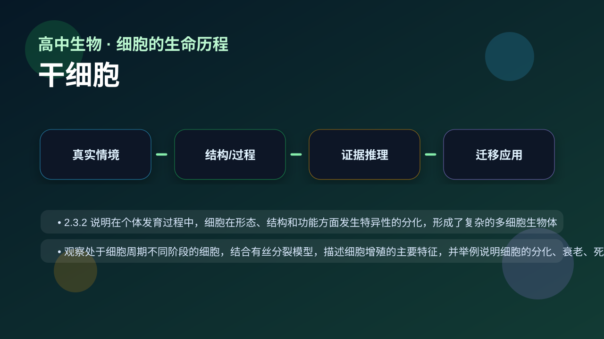
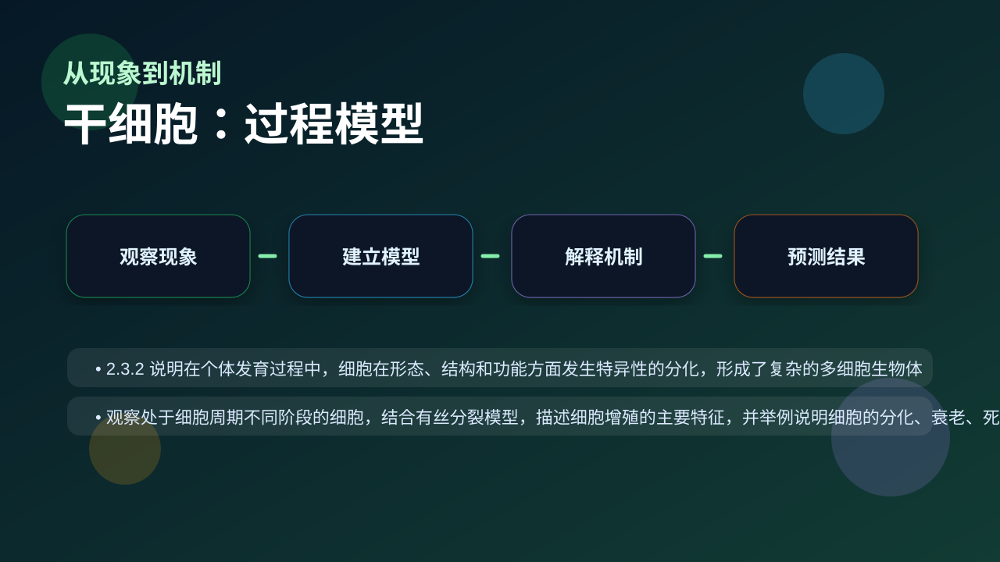
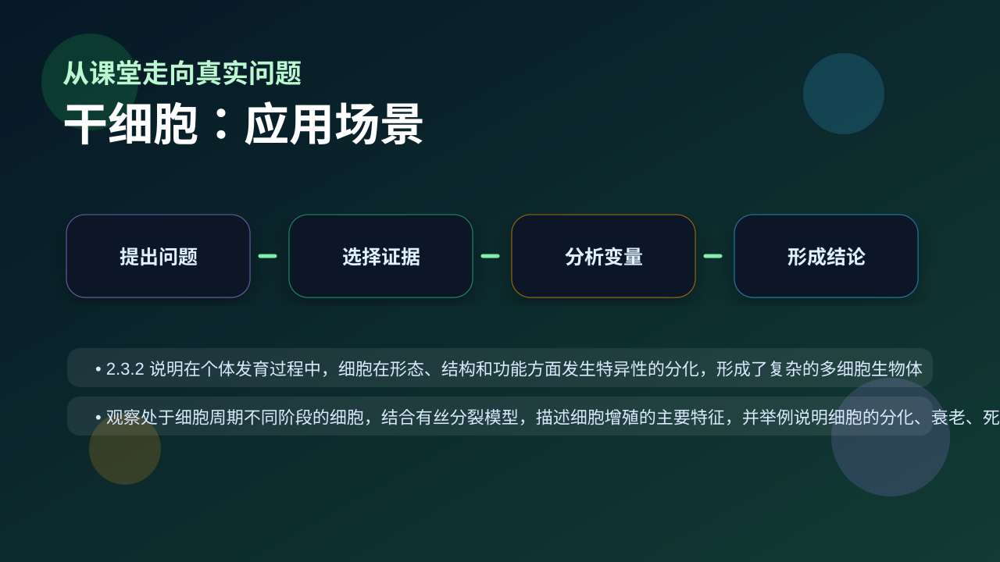

Gallery v1.0.0 · skill v7.14
结构怎样决定功能，细胞层面的变化怎样影响个体生命过程？

已经知道：你已经会背一些生物学名词，也见过实验现象、曲线和图示。
但问题是：高中生物真正考查的是能否在新情境中说明变量、机制和证据，而不是复述一句定义。
所以学：本课把 干细胞 放进一个研究员式的真实任务：先看现象，再拆机制，最后用证据完成解释。
先选一个卡点。后面的例子、互动和 AI 学伴都会围绕它给你最小提示。
选择或输入后，本课会围绕你的问题展开。
学习 干细胞 前，先判断：一个合格的生物学解释，是否只要说出名词定义就够了？
现象入口：造血干细胞能不断产生不同血细胞，胚胎干细胞则具有更广泛的分化潜能。
机制解释：干细胞兼具自我更新和分化潜能，潜能大小决定其应用范围和伦理风险。
证据抓手：证据来自克隆形成实验、分化标志物检测和移植后组织修复效果。
变量线索：干细胞来源、诱导因子、微环境和分化方向。做题时先找变量，再判断机制，最后写证据。
2.3.2 说明在个体发育过程中，细胞在形态、结构和功能方面发生特异性的分化，形成了复杂的多细胞生物体
观察处于细胞周期不同阶段的细胞，结合有丝分裂模型，描述细胞增殖的主要特征，并举例说明细胞的分化、衰老、死亡等生命现象

先描述题干现象或数据变化。
区分结构、过程、变量和层级。
用机制说明为什么会这样。
换情境预测结果并给证据。
情境：骨髓移植治疗血液病，核心是重建造血系统，而不是简单“补血”。
作答路径：第一句写可观察现象，第二句写本课机制，第三句写证据或变量关系。例如先说明“题干中哪个指标变化”，再说明“这个变化对应哪个结构或过程”，最后补上“为什么这个证据能支持结论”。
评分提醒：只有结论没有证据，通常只能得到识记分；能把 干细胞 和变量关系连起来，才是高中生物的解释性答案。
旋转 3D 分子模型，观察结构层级。请把结构特点和 干细胞 中的功能解释对应起来：结构不是装饰，而是功能的证据。
💡 操作提示：拖拽旋转模型，思考“形状、空间位置、结合位点”如何影响生命活动。
拖动滑块模拟 干细胞来源、诱导因子、微环境和分化方向 的改变，观察系统响应曲线。请把曲线变化翻译成 干细胞 的机制解释。
拖动滑块后，解释变量如何影响结果。
把所有干细胞都认为能发育成完整个体，忽略全能、多能、专能差异。
只说“增加/减少”不够，要写清改变的是 干细胞来源、诱导因子、微环境和分化方向 中的哪一个。
没有实验现象、曲线趋势或结构证据，答案就像猜测。
判断题：只要背出 干细胞 的定义，就能解决相关实验探究题。
错因诊断：如果答案只有一个名词，说明你还停留在识记层。真正的理解必须能解释“为什么”、预测“如果条件改变会怎样”，并能指出证据来自哪里。
视频用语音和动态画面回顾本课主线：问题情境 → 机制模型 → 证据判断 → 迁移应用。

分析再生医学、脐带血保存和伦理争议，要同时看潜能、风险和证据。
提交后会检查你的解释是否包含现象、机制和变量。
如果学生只说出概念名称，继续追问：题干里哪个证据最关键？这个证据对应分子、细胞、个体还是生态系统层级？如果改变 干细胞来源、诱导因子、微环境和分化方向 中的一个条件，结果会怎样？这三问能把答案从背诵推进到科学解释。
用一句话说清 干细胞 的核心机制，必须包含“变量”和“结果”。
给一个实验或曲线，判断哪条证据支持你的解释。
换到健康、农业、生态或生物技术情境，设计一个可检验的问题。
下面哪一种答案最符合高中生物的科学解释要求？
学习小结：干细胞 的关键不是记住一个孤立词，而是能把生命现象放进层级、机制和证据的框架中解释。下次遇到陌生题，先问：变量是什么？机制在哪里？证据支持哪一步？
1. 你知道什么是干细胞吗？2. 干细胞有哪些主要特性？3. 干细胞在医学中有哪些应用？
1. 干细胞可以分为哪几类？2. 干细胞的自我更新是如何实现的？3. 干细胞治疗面临哪些伦理问题？
常见误区之一是认为所有干细胞都具有相同的分化潜能。实际上，干细胞的分化潜能因其来源和类型而异。错因在于对干细胞分类和特性的理解不够深入。诊断时需要明确不同类型干细胞的分化能力和应用范围。
迁移挑战：设计一个实验，利用诱导多能干细胞（iPSC）研究某种疾病的发病机制。分析iPSC在该研究中的优势和应用前景。
先独立作答，再点选项查看对错与错因。
脐带血干细胞在医疗中主要应用于治疗血液疾病，这是因为它们属于
下列干细胞应用中，目前技术最成熟的是
与胚胎干细胞相比，成体干细胞的特点是
受精卵在发育初期具有形成完整个体的能力，这种干细胞称为____干细胞
答案：全能
只有受精卵和早期胚胎细胞具有全能性
科学家将体细胞重编程获得的干细胞称为____干细胞（填写英文缩写）
答案：iPS
induced Pluripotent Stem cells的简称
关于干细胞技术应用的叙述，正确的是
设计表格对比胚胎干细胞、成体干细胞和iPS细胞的特性